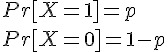
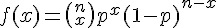
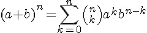
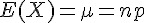
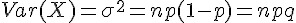
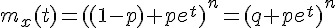
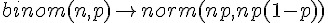

二項分布 (Binomial distribution)
伯努力試驗
伯努利試驗(Bernoulli trial) 一種只有兩種可能結果的隨機試驗，可以用下列機率分布描述：

換句話說、伯努力試驗是一種 YES or NO (1 or 0) 的試驗。舉例而言，像是「丟銅版、生男生女、 一地區某天最高溫是否超過 30 度」等等，都可以用伯努力實驗描述。
二項分布的意義
如果我們進行 n 次的伯努力試驗，而且這些試驗之間是獨立的，那麼我們就可以用二項分布來描述 n 次實驗的可能機率分布。
二項分布公式
分布公式： 
意義：dbinom(x; n, p)：在 n 次柏努力試驗中有 x 次成功的機率 (已知單次試驗成功機率為 p)。
R 的公式：dbinom(x; n, p) = p(x) = choose(n,x) p^x (1-p)^(n-x)
- R 函數：binom(size=n:樣本數, prob=p:成功機率)
- http://stat.ethz.ch/R-manual/R-patched/library/stats/html/Binomial.html
二項定理： 
特性
- 
- 
動差生成函數： 
習題
- 請問丟 10 個公平的銅板，有三個正面的機會是多少？
- 請問丟 n 個公平的銅板，正面次數 <= k 的機率是多少？
- 請問丟 10 個公平的銅板，得到正面次數的期望值為何？
R 程式範例：伯努力試驗
> y <- rbinom(50, 25, .4)
> m1 <- mean(y)
> m2 <- sum(y) / 25
> y
[1] 12 9 9 9 12 11 10 11 5 7 8 7 16 6 12 13 9 12 9 13 7 12 15 8
[25] 9 7 10 4 10 10 9 10 13 8 10 14 8 11 11 10 10 9 7 13 5 5 11 13
[49] 9 8
> m1
[1] 9.72
> m2
[1] 19.44
> m3 <- sum ( (y-m1)^2 ) / 50
> m3
[1] 6.8816
> 說明： y 中的每個數字，代表模擬投擲 25 次白努力試驗後，成功的次數有幾次。因此 rbinom(50, 25, .4) 總共進行了 50*25 次白努力試驗。
R 程式範例：二項分布曲線圖
> n=10; p=0.3; k=seq(0,n)
> plot(k, dbinom(k,n,p), type='h', main='dbinom(0:20, n=10, p=0.3)', xlab='k')
> 
二項分布的圖形
R 程式範例：(定理) 常態分配可用來逼近二項分布
假如 n 夠大的話，通常只要 n*min(p, 1-p) > 5 就可以採用下列逼近方式

原始程式：
op=par(mfrow=c(2,2))
n=3; p=0.3; k=seq(0,n)
plot(k, dbinom(k,n,p), type='h', main='dbinom(n=3, p=0.3)', xlab='k')
curve(dnorm(x,n*p,sqrt(n*p*(1-p))), add=T, col='blue')
n=5; p=0.3; k=seq(0,n)
plot(k, dbinom(k,n,p), type='h', main='dbinom(n=5, p=0.3)', xlab='k')
curve(dnorm(x,n*p,sqrt(n*p*(1-p))), add=T, col='blue')
n=10; p=0.3; k=seq(0,n)
plot(k, dbinom(k,n,p), type='h', main='dbinom(n=10, p=0.3)', xlab='k')
curve(dnorm(x,n*p,sqrt(n*p*(1-p))), add=T, col='blue')
n=100; p=0.3; k=seq(0,n)
plot(k, dbinom(k,n,p), type='h', main='dbinom(n=100, p=0.3)', xlab='k')
curve(dnorm(x,n*p,sqrt(n*p*(1-p))), add=T, col='blue')輸出圖形：

R 程式範例：二項分布統計圖
> x = rbinom(100000, 100, 0.8)
> hist(x, nclas=max(x)-min(x)+1)
> 
參考文獻
- Distributions in the stats package -- http://stat.ethz.ch/R-manual/R-patched/library/stats/html/Distributions.html
- Wikipedia:二項分佈 -- http://zh.wikipedia.org/wiki/%E4%BA%8C%E9%A0%85%E5%88%86%E4%BD%88
- Wikipedia:Binomial_distribution -- http://en.wikipedia.org/wiki/Binomial_distribution